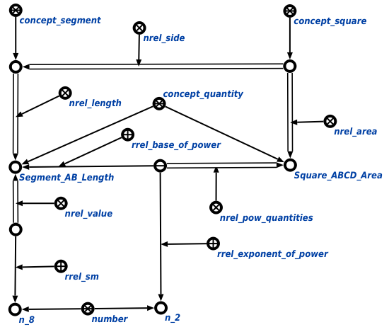

Команда выполнения логического вывода предназначена для выполнения логического вывода для выбранного фрагмента базы знаний с использованием логических утверждений. Первым аргументом команды является объект, к которому применяется утверждение, вторым - сам узел применяемого утверждения. Результатом выполнения команды является достраивание к графу условия, содержащему рассматриваемый объект, конструкций, которые присутствовали в атомарной формуле утверждения, но отсутствовали в самом графе условия. Например, задан квадрат ABCD с известной стороной, тогда результатом применения утверждения о нахождении площади к квадрату ABCD будет следующая конструкция:
